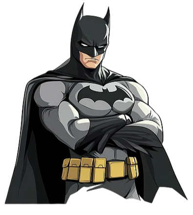

Batman es el nombre de un superhéroe ficticio creado por Bob Kane y Bill Finger para DC Comics, cuya verdadera identidad es Bruce Wayne, un millonario que, tras presenciar el asesinato de sus padres, dedica su vida a combatir el crimen en Gotham City. A diferencia de otros superhéroes, no tiene superpoderes y utiliza su intelecto, entrenamiento físico y tecnología avanzada para luchar contra el crimen.
Superman, o Kal-El (su nombre kryptoniano), es un superhéroe de la editorial DC Comics creado por Jerry Siegel y Joe Shuster. Originario del planeta Krypton, llega a la Tierra como un bebé en una nave espacial, siendo adoptado por una pareja de granjeros de Smallville que lo crían como Clark Kent. Posee una variedad de superpoderes, como superfuerza, velocidad, vuelo, invulnerabilidad y aliento congelante, y utiliza sus habilidades para proteger a la humanidad.